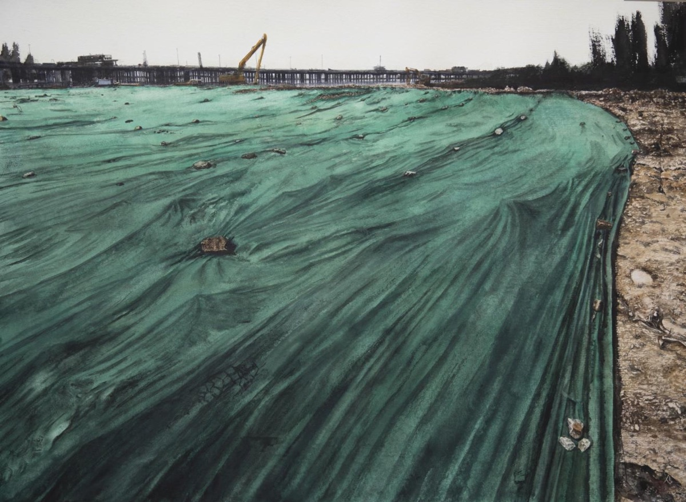
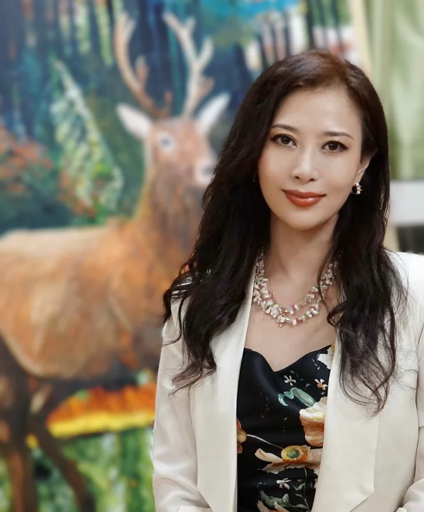

01
Contemporary Visual Artist当代视觉艺术家
KAIXUANWANG 王凯萱
KAIXUAN WANG is a contemporary visual artist based in Shenzhen, China. Her long-term practice moves across watercolor, oil painting, printmaking, and mixed media, with image and thought emerging together through sustained inquiry.
王凯萱是常驻中国深圳的当代视觉艺术家。她的长期实践涵盖水彩、油画、版画与综合材料，图像与思想在持续探索中共同生成。


About关于
Artistic Practice and Thought艺术实践与思想
KAIXUAN WANG is a contemporary visual artist based in Shenzhen, China. Her long-term practice moves across watercolor, oil painting, printmaking, and mixed media. Her philosophical writing grows from this sustained artistic practice, while each work's visual and material conditions are chosen according to the questions it requires.
KAIXUAN WANG / 王凯萱是常驻中国深圳的当代视觉艺术家，其长期实践跨越水彩、油画、版画与综合材料。她的哲学写作生长于持续的艺术实践，而每件作品的视觉与物质条件，则根据作品自身所提出的问题来选择。
Portfolio作品
Selected Works 精选作品
02
MATTER & TRACE
物质与痕迹
View Works查看作品03
LIVING PRESENCE
生命在场
View Works查看作品04
OPEN PAINTING
开放的绘画
View Works查看作品Exhibitions · Awards · Collections · Memberships展览 · 荣誉 · 收藏 · 会员
Selected Records 重要艺术履历
2025
Firewood of Tarim selected for the “Affection for the Tarim River” National Art Exhibition《柴蕴塔里木》入选“情系塔里木”全国美术作品展
2024
Featured artist profile published in Fine Arts Newspaper《美术报》艺术家专题专版
2023
Qianhai Green Curtain received qualification recognition at the Shenzhen International Watercolor Biennial《前海绿幕》获深圳国际水彩画双年展入会资格
2023
The Small Bridge in the Hometown received First Place in the Shelley Lazarus Award for Excellence in Watercolor at TAG Gallery, Los Angeles《故乡的小桥》获美国洛杉矶 TAG Gallery 首届 Shelley Lazarus Award for Excellence in Watercolor 一等奖
2022
Three Gorges Hub — Baiyang Port Rail Connection selected for the “New Era, New Journey” National Art Exhibition《三峡枢纽—白洋港陆港铁路建设》入选“新时代·新征程”全国美术作品展
2021
Passion at The Fishing Port received the Juror's Commendation Award at the NWWS 81st Annual International Open Exhibition《热情渔港》获 NWWS 第81届国际公开展评审嘉许奖
Research / Philosophy研究 / 理论
From Soft Her Power to Soft Origin 从“柔性她力量”到“柔性本元”
KAIXUAN WANG's philosophical vocabulary grows from painting rather than preceding it. Watercolor's transparency and irreversibility, the weight of infrastructure, traces of labor, and changes in land and light produce questions about relation, time, and coexistence.
王凯萱的哲学词汇从绘画经验中生长，而非先于绘画成立。水彩的透明与不可逆、基础设施的重量、劳动留下的痕迹，以及土地与光的变化，共同提出关于关系、时间与共存的问题。
When these questions become concepts, they return to the studio. A concept must remain open to correction by color, material, observation, and the resistance of an actual image. Painting and philosophy thus operate as a reciprocal method: each gives the other direction, limits, and evidence.
当这些问题被表达为概念，它们又返回工作室。概念必须接受色彩、材料、观察与具体图像阻力的校正。绘画与哲学因此构成一种往返的方法：彼此提供方向，也彼此限定并提供证据。
Softness, in this inquiry, is a relational capacity rather than a promise of harmony. It describes how life can receive pressure, maintain difference, adjust, and continue without making domination its only measure of strength. The inquiry remains grounded in concrete subjects: land, labor, infrastructure, memory, daily life, and shared environments.
在这一研究中，“柔性”是一种关系能力，而不是对和谐结果的承诺。它描述生命如何承受压力、保留差异、作出调节，并在不把支配作为唯一力量尺度的情况下继续存在。研究始终落实于土地、劳动、基础设施、记忆、日常生活与共享环境等具体对象。
Books / Publications书籍 / 出版
Books, Catalogues & Publications 书籍、画册与出版物
Contact联系
Studio, exhibitions, commissions, and press inquiries. 工作室、展览、收藏委托与媒体合作咨询。
wcher58@gmail.com
Instagram: @kaixuanwang.artInstagram：@kaixuanwang.art